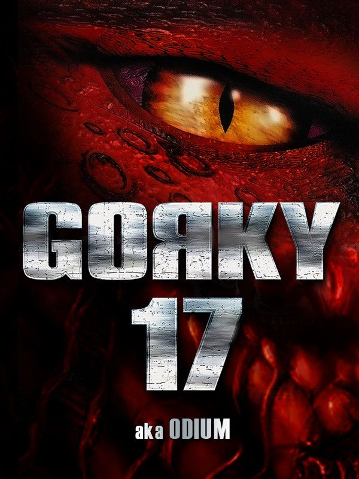

Gorky 17
Gorky 17
Details
|  | |
| Playtime | 2m 0s |
| Last Activity | 10/02/2017 23:40:50 |
| Added | 23/11/2021 11:42:07 |
| Modified | 19/02/2023 4:41:28 |
| Completion Status | Played |
| Library | Steam |
| Source | Steam |
| Platform | PC (Windows) |
| Release Date | 30/11/1999 |
| Community Score | 80 |
| Critic Score | 80 |
| User Score | |
| Genre | Adventure Role-playing (RPG) Strategy Tactical |
| Developer | Metropolis Software |
| Publisher | e.p.i.c. Interactive Linux Game Publishing Monolith Productions |
| Feature | Single Player |
| Links | Official Website Steam GOG |
| Tag | [EMT] Logo Missing [EMT] Video Micro missing |
Description
November 2008. NATO intelligence services report that, for reasons unknown, the Russian military has destroyed GORKY 17, one of the old Soviet "Secret Cities". A year later NATO takes over a former Russian secret base built on Polish soil. Diggers discover a laboratory complex in the completely demolished town. After examining the wreckage, NATO decides to leave the lab as it is. But shortly afterwards the town's previously deserted streets are suddenly teeming with hordes of grotesquely deformed creatures. Word soon gets out to the media, making it impossible for NATO to simply destroy the site. So troops are ordered to hermetically seal the area. Nobody is allowed in or out. A team of three NATO specialists under the leadership of the Canadian Cole Sullivan is sent in to examine the horrifying events on the ground.
Will they discover the terrible secret of "Gorky 17"? And more important - will they live to tell about it? Be prepared for intrigue, betrayal and even some romance. A host of multiple-choice dialog scenes present you with constant choices - many of which can have some unpredictable effects ...
Will they discover the terrible secret of "Gorky 17"? And more important - will they live to tell about it? Be prepared for intrigue, betrayal and even some romance. A host of multiple-choice dialog scenes present you with constant choices - many of which can have some unpredictable effects ...
FEATURES:
- The combination of adventure, RPG and strategy elements gives the game a uniquely original feel
- The best of three genres: (1) exploration and interaction with a challenging world (2) character development and (3) challenging high-level tactical combat.
- A thrilling Sci-Fi story with enthralling dialogs
- An easy-to-learn, intuitive, multi-faceted user interface
- A spooky soundtrack lends each location a special atmosphere
- Fully 3-dimensional real-time rendered characters with flexible skeleton animation and detailed textures
- A life-like environment with impressive 3D weather effects
- Spectacular 3D effects for weapons, including transparencies, particle-based explosions, colored lighting, texture and vertex animations